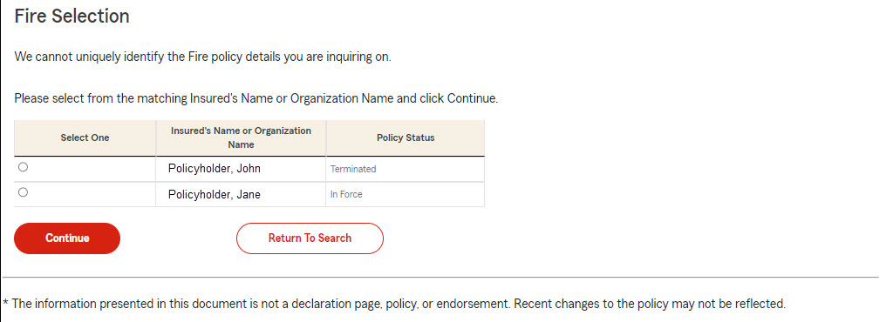
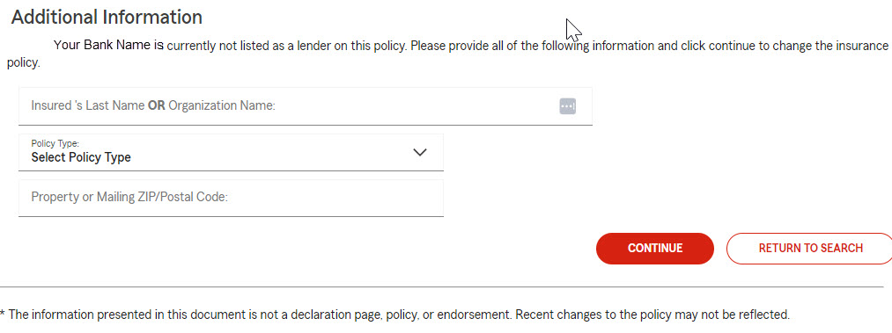

Depending on the search that was utilized it’s possible to receive multiple responses in our system. If this occurs you may receive the following screen.
This screen allows you to make a selection from the responses received in our system and view the corresponding Policy Information.

This screen allows you to provide information in order to confirm that you have an interest in the policy.
